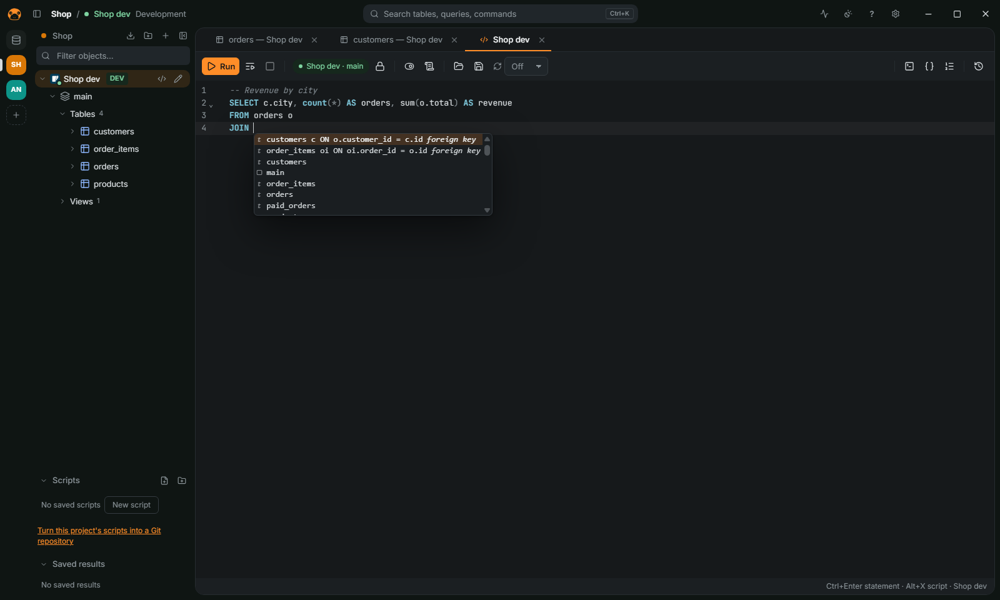

Executar consultas e ler os resultados

Executar uma instrução
- Dê um duplo clique em uma conexão (ou em uma tabela) para abrir um editor SQL.
- Digite uma instrução.
Ctrl+Spacecompleta palavras-chave, tabelas e colunas;JOINoferece as tabelas relacionadas a partir das chaves estrangeiras. - Pressione
Ctrl+Enterpara executar a instrução sob o cursor (ou a seleção), ouAlt+Xpara executar o script inteiro.Ctrl+\executa em uma nova aba de resultados. Ctrl+.cancela uma instrução em execução.
As instruções terminam em um ;, ou em uma linha em branco antes de uma palavra que começa outra. Quando uma instrução falha, o erro é indicado no texto e o painel de erros oferece Ir para o erro. Ctrl+Shift+F formata o script; Ctrl+S o salva como um arquivo .sql.
Parâmetros e variáveis
:id e ? em uma instrução, e variáveis ${name}, são pedidos em uma caixa de diálogo antes da execução e ficam em um painel Variáveis. O valor de uma ${name} entra no SQL como está, então uma instrução com variáveis é verificada de novo, já preenchida (veja Segurança).
Ler os resultados
- A grade lê as linhas uma página por vez. Clique no cabeçalho de uma coluna para ordenar: isso escreve o
ORDER BYno editor e executa de novo; um segundo clique o inverte, um terceiro restaura o da própria consulta. - Abra uma tabela pelo navegador para percorrê-la; um
WHEREdigitado no editor a filtra. F7abre o painel de valor: textos longos, JSON e XML formatados, hex e imagens de colunas binárias.- Uma célula que contém um arquivo (um PDF, uma imagem, um ZIP e outros, reconhecidos pelos seus bytes) mostra o tipo e o tamanho, como
PDF · 2.3 MB. O menu da grade oferece Salvar PDF… (ou o tipo do arquivo) e, com várias células de uma coluna, Salvar N arquivos em uma pasta…. O painel de valor tem o mesmo botão. Uma célula de texto que contém um arquivo (uma URLdata:, base64 ou hex) não tem rótulo na grade, o que exigiria ler todas as células de texto para saber: o menu da grade e o painel de valor a mostram, para as células que você seleciona. Ctrl+Fprocura nas linhas carregadas;Ctrl+Shift+Ccopia a seleção com os cabeçalhos.- Um resultado pode passar da grade para um gráfico, pela barra de status.

Entender uma consulta lenta
Pressione Ctrl+Shift+E em uma instrução para ver o plano dela. Veja FEATURES.md.
Mais
Scripts salvos, snippets, histórico, modo vim, execução de um script em várias conexões, o query builder e a análise de dados estão em FEATURES.md. A grade de resultados está em FEATURES.md.